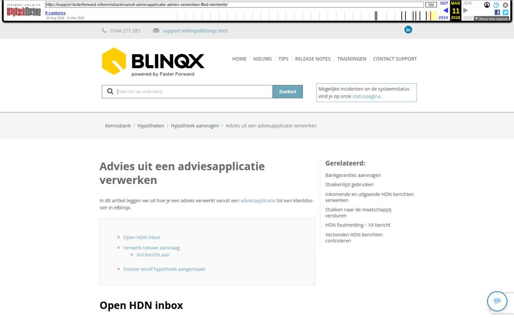

Advies uit een adviesapplicatie verwerken

Tekstinhoud
Advies uit een adviesapplicatie verwerken
In dit artikel leggen we uit hoe je een advies verwerkt vanuit een adviesapplicatie tot een klantdossier in eBlinqx.
Open HDN inbox
Verwerk nieuwe aanvraag
Vul bericht aan
Dossier en/of hypotheek aangemaakt
Open HDN inbox
Op je dashboard zie je in de tegel 'Berichten' wanneer er nieuwe HDN berichten zijn. Klik op "4 inkomende bericht(en) vereisen actie".
Je ziet vervolgens alle binnengekomen HDN berichten. In de kolom 'Pakket' zie je de naam van het adviespakket. Daarnaast zie je in de kolom 'Dossier' of er al een klantdossier bekend was.
Verwerk nieuwe aanvraag
Een nieuwe hypotheekaanvraag herken je aan de 'AX' in de kolom 'Type'. Wanneer alle informatie automatisch gematcht kan worden dan wordt het bericht direct gekoppeld aan het dossier en er wordt een nieuw hypotheekproduct aangemaakt.
Het kan zo zijn dat het bericht niet automatisch gematcht kan worden en er aanvullingen vereist zijn. Dit herken je aan het oranje mapje. Klik op het potloodje aan de rechterkant om het bericht aan te vullen.
Vul bericht aan
Vul de ontbrekende gegevens in. Voor aanvullende informatie klik je op het blauw icoon. De informatie aan de rechterkant verschijnt dan.
Als je klaar bent met aanvullen klik je op het opslaanicoon linksboven.
Dossier en/of hypotheek aangemaakt
Je komt nu terug in de HDN inbox. Als er bij binnenkomst van het AX bericht niet gematcht kon worden aan een bestaand dossier dan zie je dat er een dossier is aangemaakt waarin de hypotheek is opgenomen.
Kan bij binnenkomst van het AX bericht wel gematcht worden aan een bestaand dossier dan wordt aan dit bestaande dossier de hypotheek toegevoegd.
Klik op het dossiernummer om het bijbehorende klantdossier te openen. Of klik op de offerte om direct naar het hypotheekproduct te gaan.
Hier kan je lezen hoe je de aanvraag vanuit het dossier naar de maatschappij verstuurd.
Laatste update: 15 oktober 2025
Was deze informatie nuttig?
Ja Nee